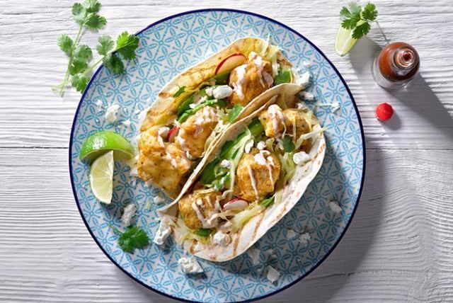

Baja-Style Mini Fish Tacos

Ingredients
- 500 g snapper cut into strips
- 20 corn tortillas
- 1 Litre oil for frying
CHIPOTLE MAYO
- 60 ml Tabasco Chipotle sauce
- 500 ml mayonnaise
- 30 ml lime juice
BATTER
- 400 g plain flour
- 8 g baking powder
- 5 g oregano
- 100 ml beer
FILLING
- 1/2 cabbage finely shredded
- 4 avocados cut lengthways pitted
- 150 g fetta crumbled
- 1 bunch coriander chopped fresh
- 8 radishes quartered
- 5 limes quartered
Method
- Chipotle mayo: Mix the chipotle mayo ingredients together and season to taste, then set aside.
- Batter: Mix the dry ingredients together, then whisk in the beer until it makes a smooth batter.
- Preheat the fryer 170C (or use a saucepan of oil).
- Dust the fish in a little flour, then dip in the batter to coat. Gently deep-fry until golden brown or for 3 or 4 minutes until the fish floats.
- Drain on kitchen paper and keep warm.
- Meanwhile, warm each corn tortilla in the oven so they are soft and pliable.
- On a serving dish, lay down the tortillas and place a piece of avocado and fish in the centre of each.
- Sprinkle the top of each with some shredded cabbage, cheese and coriander. Drizzle chipotle mayo over the top in a zigzag pattern.
- Decorate with the radishes and squeeze some fresh lime on top.